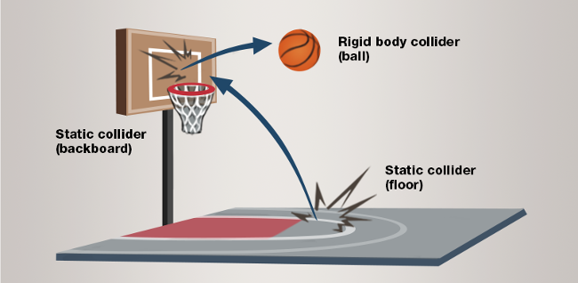

Collidables
Beginner Designer
Collidables are the base entity components for physics objects. There are three main types:
- Statics: Objects that don't move (terrain, walls, floors, large rocks)
- Bodies: Moving objects, affected by gravity and collisions (cans, balls, boxes) or Kinematics (moving platforms, doors)
- Characters: Colliders for basic characters (player character, animals, NPCs)

You can also:
- Define the shape of collidables components
- Make triggers, and detect when other physics objects pass through them
- Constrain collider movement with constraints
Collisions
Collidables interact according to the table below.
| Characters | Bodies | Statics | |
|---|---|---|---|
| Characters | Collides | Collides and bounces | Collides |
| Bodies | Collides and bounces | Collides and bounces | Collides and bounces |
| Statics | Collides | Collides and bounces | Pass through |
Characters do not have any inertia, and so cannot bounce off of bodies or statics when colliding with them.
Three other factor control whether two collidables would collide with each other, their Collision Layer, Collision Group and their Contact Event Handler
Collision Layers
The collision layer controls whether that object would collide with object on other layers.
This relationship is controlled through the Simulation's Collision Matrix.
Collision Group
This property is used to filter collisions inside a group of object, when two or more objects must share the same Collision Layer, but should not collide between each other.
It allows objects sharing the same CollisionGroup.Id to pass through each other when the absolute difference between their IndexA, IndexB, and IndexC is less than two.
Its utility is best shown through concrete examples.
You have multiple characters
A, B, C, Dall set to the sameCollisionLayer, they are split in two teamsA, BandC, D. Members of the same team must not collide between each other, you can setA, B's Id to 1 andC, D's Id to 2.You have a chain of three colliders attached to each other
A, B, C, you don't want A and C to collide with B, but A and C should collide together. Set A, B and C's Ids to 1 to start filtering, leave A'sIndexAat 0, B's to 1 and C to 2. A and C will collide since the difference between theirIndexAis equal to two, but neither of them will collide with B since they are both only one away from B'sIndexAvalue.
Contact Event Handler
The contact event handler is a class that receives collision data whenever the object it is associated with collides with the world.
It is most often used to transform physics object into 'trigger boxes', areas that run events whenever objects, like the player character, passes through them. See Triggers.
If the contact event handler you bind to an object is set to NoContactResponse, the object will never prevent anything from passing through it, it will only collect collision events.